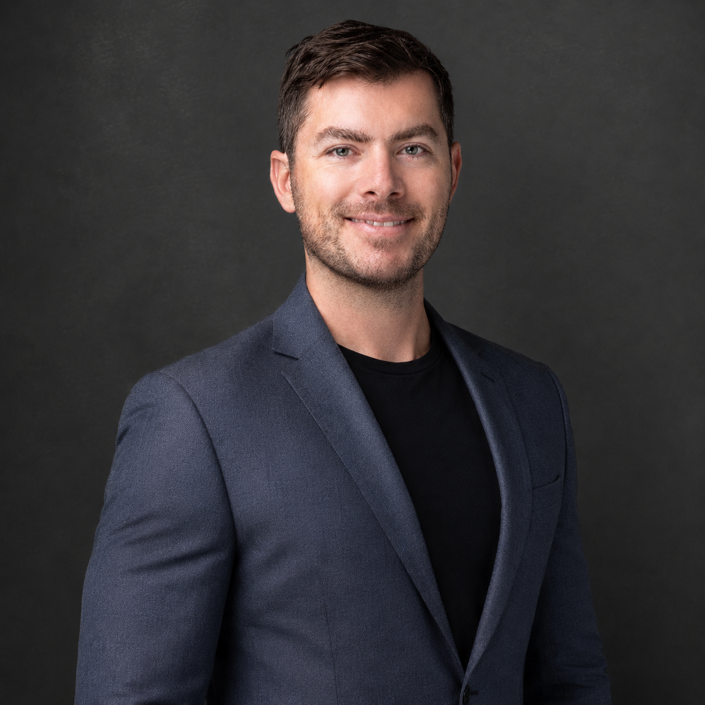

Enterprise Architect · Forward Deployed · Banking & Telco

Industry Expertise
Deep, hands-on experience in two of the most regulated and complex industries in the Asia-Pacific region.
Designed and delivered core banking infrastructure for Singapore's first fully digital bank, taking it from zero to 700,000 customers and 3M+ daily transactions with six-nines availability. Deep knowledge of MAS compliance, APRA regulations, and multi-cloud banking architecture for NAB.
Principal Enterprise Architect at Globe Telecom, driving OSS/BSS transformation, network modernisation, and Field Service Management. Overseeing SDWAN, FSM programs, and a centralised SKU catalogue, all focused on delivering customer experiences that rival consumer-grade apps in a complex telco environment.
Led a $2M/year Splunk to cloud-native Grafana migration across 200+ applications and 18 business units. Built self-service observability platforms that saved 400+ engineering hours monthly and gave teams the data to make faster, better decisions.
About Me
I'm a VP-level Enterprise Architect with a decade of hands-on delivery across banking and telecommunications, embedded inside the organisations I work with rather than advising from the outside.
I don't show up with a slide deck and a framework. I get into the weeds with the teams, understand what's actually breaking, what the business needs to deliver, and design something that holds up in the real world. Whether it's building a bank from scratch or modernising a national telco network, the approach is the same: own the problem, set a clear direction, and make sure it ships.
In banking, I've worked across Singapore (Trust Bank, MAS-regulated), Australia (NAB, APRA-compliant), and the broader Asia-Pacific region, covering core banking, fast payments, zero-trust security, and multi-cloud resilience.
In telco, I lead architecture across Globe Telecom's enterprise programs: modernising network infrastructure, replacing legacy OSS/BSS, and building the kind of customer experience platforms that turn a field service visit into something people actually trust.
Ways of Working
I operate inside teams, not above them. Architecture that doesn't ship is just a diagram.
Infrastructure as code, automated pipelines, and Git as the source of truth. No exceptions.
FinOps is baked in from day one. Every architecture decision has a cost implication and I make it visible.
Build once, enable many. Self-service platforms that reduce toil and let product teams move faster.
Regulatory requirements (MAS, APRA) are architectural constraints, not afterthoughts.
Strategic Capabilities
AI doesn't fail because of the model. It fails because the data isn't clean, the pipelines aren't reliable, and nobody thought about governance until it was too late. I build the foundations that make AI actually work in production: data platforms, inference infrastructure, governance guardrails, and the organisational patterns that keep it from becoming a liability.
Markets move fast. Monolithic systems don't. Composable architecture treats your business capabilities as modular, interchangeable building blocks, so when the strategy shifts, your technology moves with it, not against it. I've replaced legacy vendor lock-in at Globe Telecom and Trust Bank with systems that the business can actually own and evolve.
Most people walk in with a checklist. The right question isn't whether the technology works today. It's whether it can become something great, and exactly what's standing in the way. I look at a company's technology the way a great editor reads a manuscript: I see not just what's there, but what it could be. When you're making a $100M decision, that distinction is everything.
Career
Capabilities
Get In Touch
Open to senior architecture, VP, C-Level, and advisory roles across banking, telco, and cloud-native transformation. Available globally across Asia-Pacific, Europe, and the Americas.